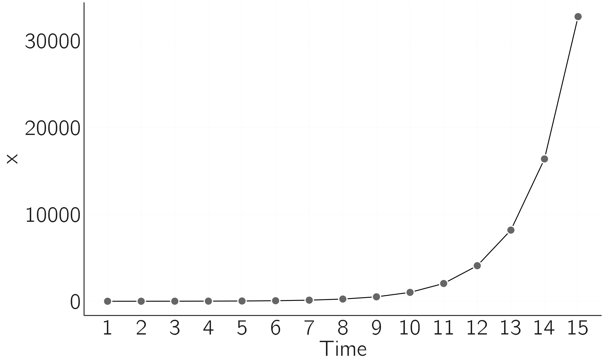
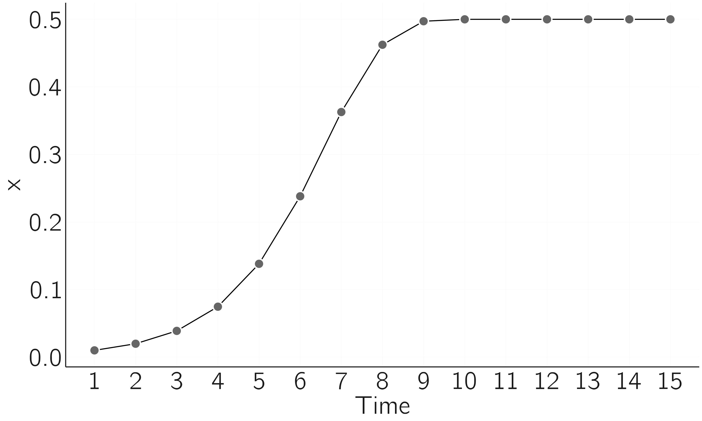
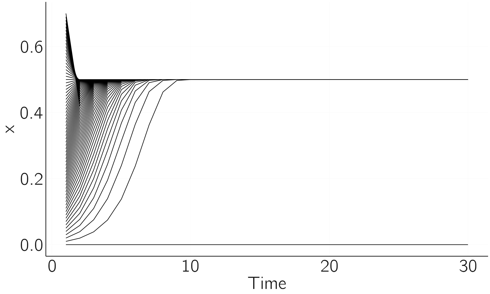
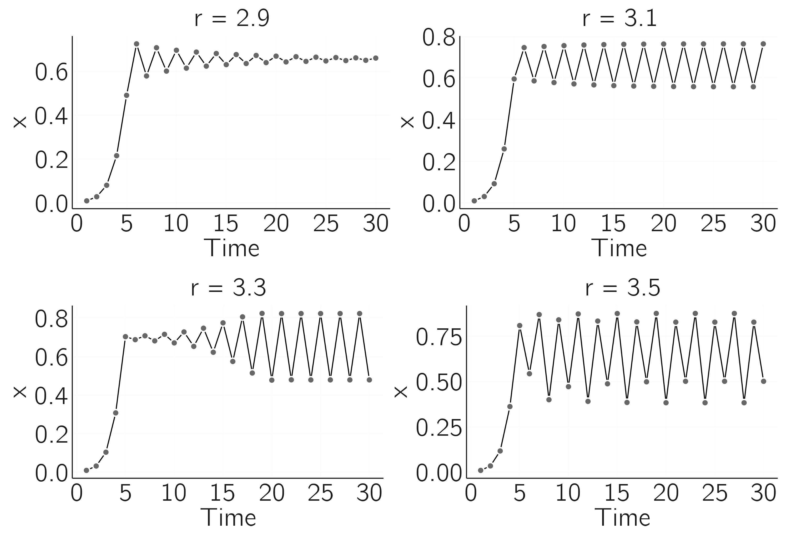
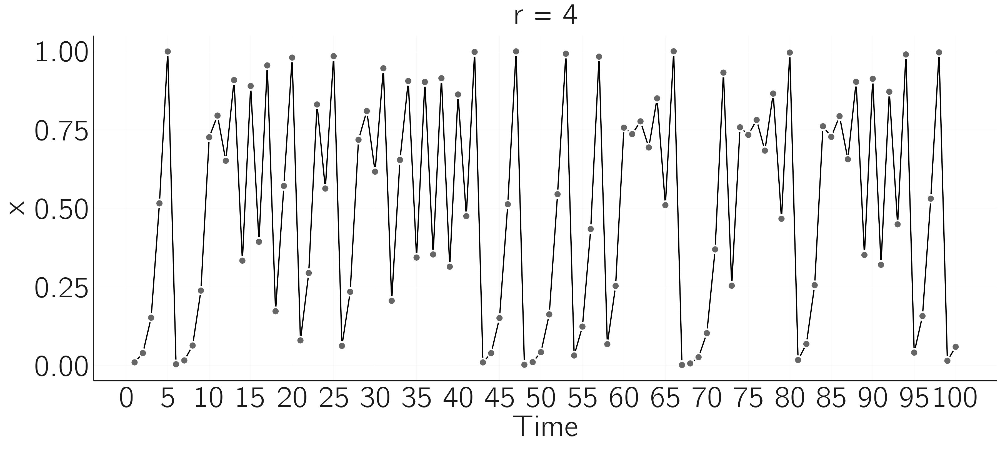
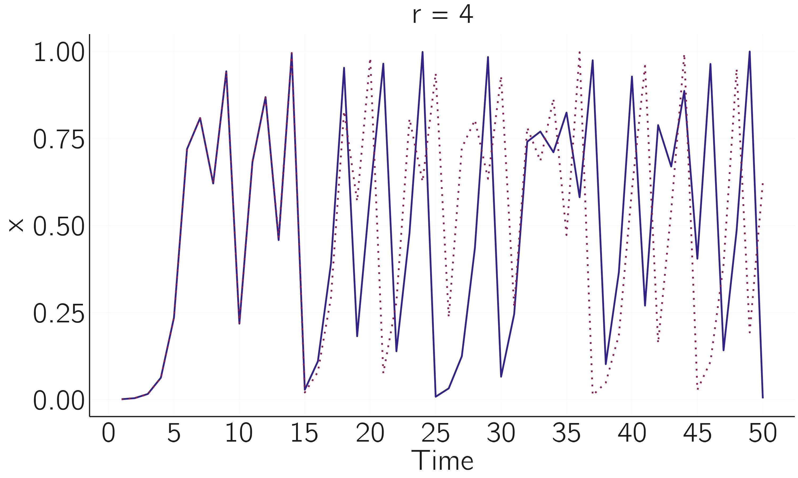
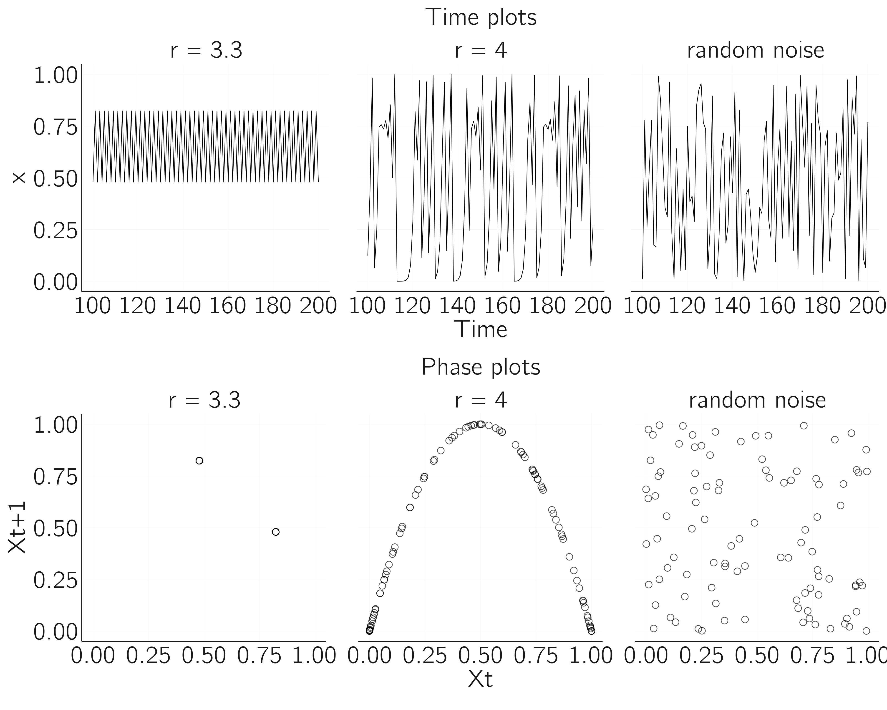
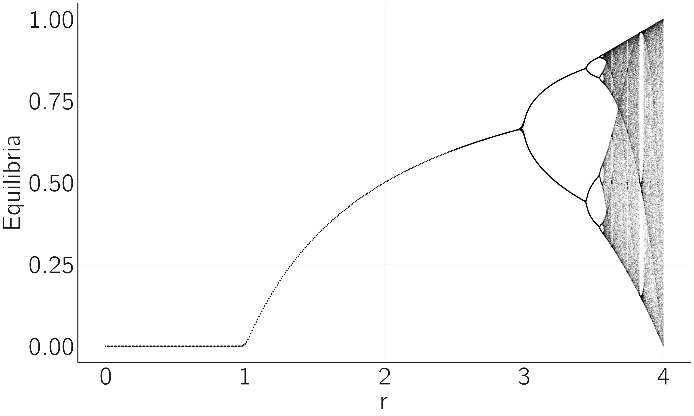

n <- 15
r <- 2
x <- rep(0, n)
x[1] <- 2 # initial state X0 = 1 and thus X1 = 2
for (i in 1:(n - 1)) {
x[i + 1] <- r * x[i]
}
plot(x, type = 'b', xlab = 'time', bty = 'n')2 カオスと予測不可能性
2.1 はじめに
数百万人の参加者についての膨大な量の遺伝学的、生物学的、心理学的データと、関係するすべての環境要因の知識をもっているとしよう。さらに、これらの膨大なデータが素晴らしい品質のものだとしよう。最先端の機械学習モデルと強力な計算資源を用いれば、すべての変数の主効果と高次の交互作用効果を含み、非線形変換すら組み込んだ高度な統計モデルを構築できるだろう。それでもなお、予測は不可能かもしれない。なぜか。決定論的カオスと呼ばれる現象のためである。
決定論的カオスとは、初期条件に対して非常に敏感な複雑系の振る舞いを指し、決定論的な法則に支配されているにもかかわらず、予測不可能で一見ランダムな結果をもたらす。
カオスは複雑系における最も目覚ましい現象の一つであり、心理学者として私たちはカオス理論の基本的な結果を知っておくべきである。カオスについて学ぶことは大いに楽しくもあり、また後の章で必要となる多くの鍵概念を導入することもできる。
私見では、カオス理論の心理学や社会科学への直接的な適用可能性はいくぶん限られている。長い間、研究者たちは精神生理学的測定の時系列にカオスを示そうと試みてきたが、これは難しいようである。この研究については本章の終わりで簡単に概観する。カオス理論の意義は、その適用にではなく、予測に対するその根本的な含意にあるのかもしれない。カオス理論が基本的に示すのは、非常に正確なモデルとデータをもつという最良の状況においてすら、長期予測が不可能でありうる、ということである。
これはバタフライ効果として知られている (Lorenz 1963)。すなわち、蝶がインドで羽ばたくと、そのわずかな気圧の変化が、やがてアイオワで竜巻を引き起こしうる、というものである。
2.2 ウサギの個体群成長
カオス理論は多くの深遠な数学的結果から成るが、カオスの基本を理解することはそれほど難しくない。以下では、差分方程式におけるカオスを、数学とプログラミングの非常に基本的なレベルで説明する。初歩的な例は有名なロジスティック写像であり、通常はたとえばウサギの個体群成長のモデルとして導入される。ある島にウサギがいて、増え始めるとしよう。そのような過程の数学的モデルはどのようなものになるだろうか。
一般に、力学系においては、ある変数（たとえば \(X\)）の変化や成長は、現在の状態といくつかのパラメータに依存する。時間は非常に特別な役割を果たす。私たちは離散的な時間ステップも連続的な時間ステップも用いることができる。前者の場合——これが本章の焦点である——には差分方程式を用い、後者の場合には微分方程式を用いる。ロジスティック写像においては、時間は離散的である（個体群成長は世代ごとに起こる）。ウサギの個体群成長の最も単純な力学モデルは次のとおりである。
個体群成長は力学系の典型例である。というのも、それは変化のモデルだからである。
\[ X_{t + 1} = rX_{t}. \tag{2.1}\]
これは、\(X\) の新しい値が、\(X\) の以前の値に \(r\) を掛けたものによって決まる、ということを述べている。この方程式において \(r\) は成長率である。\(r\) の値、たとえば \(r=2\) を選ぶことで、このモデルをシミュレートできる。初期値も必要であり、たとえば \(X_{0} = 1\) とする。これがまったく初めてであれば、いくつかの値を繰り返し入力してみよ。指数関数的成長が見られるだろう（\(X_{1} = 2,\ X_{2} = 4,X_{3} = 8,X_{4} = 16,\ etc.)\)。R では for ループを用いてこれをシミュレートできる（結果は figure fig-ch2-img1 に示す）。

for ループで行うようにモデルを反復することで、\(X_{0}\) が与えられれば任意の \(X_{t}\) を求められることに注意しよう。\(X_{t}\) は解と呼ばれる。この場合、シミュレーションはやや奇妙である。解は解析的に計算できる。それは \(X_{t} = X_{0}r^{t}\) である。したがって \(X_{15} = 1 \times 2^{15} = 32768\) となる。
より複雑なモデルでは、解析解はしばしば得られず、シミュレーション（数値解）を用いなければならない。
指数関数モデルは、個体群成長が資源によって制限されるという事実を無視していることに注意しよう。ある時点で食料が乏しくなる。1838年にフェルフルスト（Verhulst）によって導入された、モデルをより現実的にする一つの方法は、成長を制限する項を加えることである。
\[ X_{t + 1} = f\left( X_{t} \right) = rX_{t}\left( 1 - \frac{X_{t}}{K} \right). \tag{2.2}\]
方程式へのこの追加はどのような効果をもつだろうか。\(X\) が資源 \(K\) よりもはるかに小さければ、第二項 \(\left( 1 - {X_{t}}/{K} \right)\) は 1 に近く、指数関数的成長が見られる。しかし \(X\) が \(K\) に近づくにつれ、この項は非常に小さくなり、指数関数的成長の効果を減じる。\(X\) は実際には \(K\) まで成長するのではなく、収束するとしても、より低い値まで成長する。これはすぐに見ることになる。また、\(K\) の実際の値は関心の対象ではないことも判明する。\(K\) を変えても質的な振る舞いは変わらない。したがって、\(K\) は通常 1 に設定され、個体群 \(X\) を 0 と 1 の間にスケーリングする。残る唯一のパラメータは \(r\) である。しかし、\(r\) を変えると、いくつもの驚くべき振る舞いが生じる。1
2.3 安定な固定点と不安定な固定点
まず「退屈な」場合、\(r = 2\) を調べてみよう（figure fig-ch2-img2）。
n <- 15
r <- 2
x <- rep(0, n)
x[1] <- .01 # initial state
for (i in 1:(n - 1)) {
x[i + 1] <- r * x[i] * (1 - x[i])
}
plot(x, type = 'b', xlab = 'time', bty = 'n')
これは単純な場合である。個体群は初め指数関数的に発展するが、その後平坦になり、\(X = .5\) で安定状態に達する。これについてもう少し理解する必要がある。ここで見て取れるのは、不安定な初期状態から安定な状態、すなわち点アトラクタへと移行した、ということである。次のコードは、この点アトラクタが広い範囲の初期値から引き寄せるが、すべての初期値からではないことを示している。
n <- 30; r <- 2; x <- rep(0,n)
for (init in seq(0, .7, by = .01)){
# start from different initial values
x[1] <- init
for (i in 1:(n - 1)){
x[i + 1] <- r * x[i] * (1 - x[i])
}
if (x[i] == 0)
plot(x,type = 'l',xlab = 'time',bty = 'n',ylim = c(0, .8),col = 'red')
else
lines(x)
}ちょうど 0 から始めれば、\(X\) は 0 のままである。したがって 0 もまた平衡状態であるが、特別なものである。それは不安定な固定点である。小さな摂動が加われば、\(X\) は安定な固定点である .5 へと移動する。0 のごく近くにあるすべての初期値は 0 から離れていく（反発する）が、\(X\) がちょうど 0 であれば、それは永遠に 0 のままである。したがって、\(X = 0\) は固定点であるが不安定である（figure fig-ch2-img1）。
固定点は安定でも不安定でもありうる。

安定または不安定な平衡状態というこの概念は、後の章にとって決定的に重要である。次章の要点は、制御パラメータ——ここでは \(r\)——を変え、平衡状態のパターン（平衡状態のランドスケープ）がどのように変化するかを研究することにある。1 のわずかに下と上の \(r\) の値でシミュレーションを再実行することで、これを自分で容易に行える。\(r < 1\) の場合、安定なアトラクタは一つ（0）だけである。
これをシミュレートすることは実は必要ではない。\(X_{t + 1} = X_{t} = X^{*}\) となるときに固定点（\(X^{*}\)）が見出される、ということに気づかねばならない。次を自分で確かめよ。
\[ \begin{gathered} X_{t + 1} = X_{t} = X^{*} \\ X^{*} = rX^{*}( 1 - X^{*}) \\ X^{*} = 0\ or\ 1 = r - rX^{*} \\ X^{*} = 0\ or\ X^{*} = \frac{r - 1}{r}. \\ \end{gathered} \]
したがって 0 と \((r - 1)/r\) が固定点である。実際、\(r = 2\) について、0 と .5 が平衡状態であり、一方が不安定、他方が安定であることを見てきた。固定点が安定かどうかを判定するには、関数の導関数 \(f^{'}(x)\) を見る。これは容易に確かめられるように \(r - 2rX\) である。
固定点は、その固定点の値における導関数の絶対値が 1 より小さければ安定である。2 \(r = 2\) の場合、固定点は 0 と .5 である。\(\left| f^{'}\left( X^{*} = 0 \right) \right| = |2 - 0| = 2\) であり、これは 1 より大きいので \(X^{*} = 0\) は不安定である。\(\left| f^{'}\left( X^{*} = .5 \right) \right| = |2 - 2 \times 2 \times .5| = 0\) であり、これは 1 より小さいので \(X^{*} = .5\) は安定である。\(X^{*}=(r - 1)/r\) が \(1 < r < 3\) で安定であることを、R のコードでも導関数の絶対値でも、自分で確かめられる。
2.4 リミットサイクル
こうして \(r = 3\) で \((r - 1)/r\) の固定点は不安定になる。いくつかの場合を調べてみよう。figure fig-ch2-img4 のプロットは figure fig-ch2-img2 のコードで作成したものである。

\(r = 2.9\) について、系列が固定点 \(\frac{1.9}{2.9} = .66\) に収束するが、それはオーバーシュートとアンダーシュートを繰り返す過程を経てである、ということが見て取れる。\(r = 3.1\) と \(r = 3.3\) の間で、周期 2 のリミットサイクルが生じる。 \(r = 3.5\) についてこれはさらに顕著になり、周期 4 のリミットサイクルが見られる。少し大きい値については、より高い周期のサイクルが得られうる。
周期 2 のリミットサイクルでは、個体群は二つの値の間で振動する。
これらのリミットサイクルは実際の個体群動態で生じると主張されてきた (Hassell, Lawton, and May 1976)。直観的には、これはオーバーシュートとアンダーシュートの過程として理解でき、それは 3 より少し下の \(r\) については減衰するが、\(r > 3\) については減衰しない。
2.5 カオス
\(r\) をさらに大きくすると、周期の倍化はさらに奇妙な振る舞いへと変わる。figure fig-ch2-img4 は \(r = 4\) について時系列がどのようになるかを示している。

規則性はないように見える。これが決定論的カオスと呼ばれるものである。方程式を知っており、システムが決定論的であるにもかかわらず、この時系列は予測不可能である。これによって正確には何を意味するのか。例示してみよう。
r <- 4; n <- 50; x <- rep(0,n)
x[1] <- .001
for (i in 1:(n - 1)){
x[i + 1] <- r * x[i] * (1 - x[i])
}
plot(x, type = 'l', xlab = 'time', bty = 'n')
# restart with sightly different initial state:
x[1] <- .0010001
for (i in 1:(n - 1)){
x[i + 1] <- r * x[i] * (1 - x[i])
}
lines(x, col = 'red')
わずかに異なる初期値での実行は、初めは同じ経路をたどるが、その後鋭く発散することが見て取れる（figure fig-ch2-img6）。ごく小さな摂動（蝶の羽ばたき）がシステムを通じて伝播し、システムの長期的な進路を劇的に変えてしまう。
初期状態の正確な値についてある程度の不確実性が常に避けられないことに注意しよう。天気システムにおける温度についてロジスティック写像のような方程式があり、この方程式がそのシステムを完璧に記述するとしよう。予測を行うには、現在の温度をコンピュータに入力する必要がある。しかし私たちは温度を無限の精度で測定できない。そしてたとえできたとしても、無限桁の数を扱えるコンピュータをもってはいない。したがって、初期状態の設定で小さな誤差が生じ、これが長期予報を常に台無しにする。天気はカオス的なシステムであることが判明している。初期条件への敏感性は、決定論的カオスの必要条件であり、おそらく十分条件でもある。カオスの定義についての議論は Banks et al. (1992) と Broer and Takens (2010) を参照されたい。
これこそが、はるかに精密な数学的モデルを開発し、より集中的でより正確な測定を行い、より強力なコンピュータを用いたとしても、長期の天気予報が決して可能にならない理由である。
リャプノフ係数の考えは、\(\varepsilon\) の差をもつ非常に近い二つの初期条件を取ることにある。次の反復では、この差はより小さくなるか、同じか、より大きくなるかもしれない。最後の場合、時系列は発散し、これはカオスに典型的である。リャプノフ係数は次のように定義される。
リャプノフ係数はカオスを定量化する。
\[ {\lambda_{L} = \lim_{n \rightarrow \infty}}{\frac{1}{n}}{\sum_{i}^{n}{\ln\left| f^{'}\left( X_{i} \right) \right|}}. \tag{2.3}\]
ここでロジスティック写像については \(f^{'}\left( X_{i} \right) = r - 2rX_{i}\) であり、\(\lambda_{L} > 0\) はカオスを示す。\(r = 4\) について \(\lambda_{L} > 0\) であること、すなわちカオスを示すことを、シミュレーションで確かめてみるとよい。
2.6 位相プロットと分岐図
Equation eq-ch2-2 は非常に単純である。それはたった一つの方程式、\(X_{t + 1}\) が \(X_{t}\) にどのように依存するかを指定する決定論的な差分方程式にすぎないが、その振る舞いの多様さは驚くべきものである。その振る舞いをよりよく理解する一つの方法は位相プロットを用いることである。 一次元系では \(X_{t}\) に対して \(X_{t + 1}\) をプロットする（figure fig-ch2-img7 を参照）。この図のコードは次のとおりである。
位相プロットとは、時間とともに変化する二つ以上の変数の間の関係を図的に表現したものである。
layout(matrix(1:6,2,3))
r <- 3.3; n <- 200; x <- rep(0,n)
x[1] <- .001
for(i in 1:(n-1)) x[i+1] = r*x[i]*(1-x[i])
x <- x[-1:-100]
plot(x, type = 'l', xlab = 'time', bty = 'n',
main = paste('r = ', r),
ylim = 0:1, cex.main = 2)
plot(x[-length(x)], x[-1],
xlim=0:1, ylim=0:1, xlab='Xt', ylab='Xt+1', bty='n')
r <- 4; x[1] <- .001;
for(i in 1:(n-1)) x[i+1] <- r * x[i] * (1-x[i])
x <- x[-1:-100]
plot(x, type = 'l', xlab = 'time', bty = 'n',
main = paste('r = ',r), cex.main = 2)
plot(x[-length(x)], x[-1], xlim = 0:1, ylim = 0:1,
xlab = 'Xt', ylab = 'Xt+1', bty = 'n')
x <- runif(200,0,1)
x <- x[-1:-100]
plot(x, type = 'l', xlab = 'time', bty = 'n',
main = 'random noise',
cex.main = 2)
plot(x[-length(x)],x[-1], xlim = 0:1, ylim = 0:1,
xlab = 'Xt', ylab = 'Xt+1', bty = 'n')
上の図は時間プロット、下の図は位相プロットである。第一列は周期 2 のリミットサイクル、第二列は決定論的カオス、第三列は一様分布から生成したノイズを示す。第二と第三の場合の時系列は似て見えるが、位相図はカオス時系列に隠れた構造を明らかにする。位相プロットは、カオスをノイズから区別するのに役立つ。
第二の有用なグラフは分岐グラフである。 ロジスティック写像の場合、それは異なる \(r\) の値に対する平衡状態の振る舞いを一つの図に要約する。その考えは、x 軸上の一定範囲の \(r\) の値について、平衡状態を y 値としてプロットすることである。これは、低い \(r\) の値（\(r < 1\)）を取れば、\(X^{*} = 0\) だけが安定な固定点であるから、0 だけをプロットすることを意味する。1 と 3 の間では、\((r - 1)/r\) に等しい一つの固定点も見られる。\(r = 3.3\) については、アトラクタが周期 2 のリミットサイクルであるから、二つの点が見られると予想される。より高い \(r\) についてはカオスが得られる。これらはどのように見えるだろうか。
分岐グラフとは、システムのパラメータの一つが変化するときに、たとえば安定からカオスへと、システムの質的な振る舞いがどのように変化するかを示す図である。
これを自分でプログラムすることは、実によい挑戦である。コツは、一定範囲の \(r\) の値について時系列を作成し、この系列の最初の部分を削除し（平衡状態の振る舞いだけがほしい）、これらを y 値としてプロットすることである。したがって、ロジスティック写像が周期 2 をもつ（\(r = 3.3\)）場合、二つの点だけを繰り返しプロットする。\(r = 4\) についてはカオスの帯全体が得られる。
これを行う巧妙な方法は、R の sapply 関数を用いることである。
layout(1)
f <- function(r, x, n, m){
x <- rep(x,n)
for(i in 1:(n-1)) x[i+1] <- r * x[i] * (1-x[i])
x[c((n-m):n)] # only return last m iterations
}
r.range <- seq(0, 2.5, by = 0.01)
r.range <- c(r.range,seq(2.5, 4, by = 0.001))
n <- 200; m <-100
equilibria <- as.vector(sapply(r.range, f, x = 0.1, n = n, m = m-1))
r <- sort(rep(r.range, m))
plot(equilibria ~ r, pch = 19, cex = .01, bty = 'n')これは figure fig-ch2-img8 をもたらす。実際に、\(r < 3\) について安定な固定点、\(r > 3\) についてリミットサイクルの周期倍化、そしてそれに続くカオスが見られる。

フラクタルは多くのカオス写像で繰り返し現れる現象である。 \(r\) が 3.83 と 3.86 の間の区間を拡大することで、ロジスティック写像のフラクタル的な性質を見ることができる（演習 2 を参照）。リミットサイクルの三つの平衡状態が再び周期倍化サイクルへと分裂する。これは、\(r\) が 3 と 3.5 の間の全体プロットで見たとおりである。
フラクタルとは、図を拡大するとある種のパターンが再び現れ、さらに拡大するとこれが何度も何度も起こる、そのような図形である。
このカオスへの周期倍化の道筋に関する有名な一つの結果がファイゲンバウム定数である。連続する周期倍化点の間の距離の比（たとえば、第一と第二の間の距離を第二と第三の点の間の距離で割ったもの）は、約 4.6692 の値に収束する。驚くべきことは、この定数が任意の単峰写像について同じである、ということである。
2.7 何を学んだか
私はこれらの結果を見事だと思う。生成する関数は見かけによらず単純だが、その振る舞いは全く複雑で美しい、ということを改めて指摘しておく。数学者たちはこれらのプロットのあらゆる細部を研究してきたが、その大半は私の理解を超えている。ロジスティック写像に関するウィキペディアは、さらに進んだ概念のいくつかを紹介してくれるが、私たちの目的には現在の入門で十分である。
すでに学んだ概念を振り返ろう。第一は平衡状態の概念である。力学系の状態はある値に収束する傾向がある。これらのうち最も単純なものが固定点である。固定点は安定でも不安定でもありうる（これについては次章で詳述する）。システムをちょうどその不安定な固定点で始めれば（そしてシステムにノイズがなければ）、それはそこにとどまる。しかし、どんな小さな摂動でも、それは逃れて安定な固定点へと移動する。
分岐図はこの振る舞いを要約し、また制御パラメータが変化するときに平衡状態がどのように変化するかを示す。たとえば、\(r = 1\) でロジスティック写像における分岐が見られる。初め 0 が安定な固定点で \((r - 1)/r\) が不安定であった。\(r = 1\) でこれが逆転する。\(r = 3\) でリミットサイクルが現れるとき、別の分岐が見られる。
私たちは、あらゆる種類の平衡状態が存在することを学んだ。最も奇妙なものはストレンジアトラクタと呼ばれ、決定論的カオスと結び付いている。位相図を作ることでそれを見ることができる。他の有名な写像の位相図はしばしば見事である。最も有名なものはマンデルブロ集合である（インターネットで見よ）。マンデルブロ集合についての R ブログがある。3 シミュレーションは理解を助ける！
私たちが学んだ最後のことは、たとえ私たちの世界が決定論的であり（そうではない！）、運動のすべての法則（たとえばロジスティック写像）を知っており、初期状態を莫大な精度で知っていたとしても、世界は依然として予測不可能であろう、ということである。
この主張にはいくらかのニュアンスが必要である。天気がカオス的で予測不可能でありうることはすでに述べた。しかし天気は常にそれほど予測不可能であるわけではない。時にはより長期の予報も可能である。しかしたとえば 10 日を超える予報は手が届かないように思われる。ロジスティック写像でも、\(r\) が 4 に近いとき予報はバタフライ効果に悩まされるが、\(r = 2\) については時間経過は非常に予測可能であり、多くの線形系よりもさらに予測可能であることが見て取れる。これは、安定な固定点が一つ（.5）しかないためである。初期状態は問題にならない。私たちは常に .5 に行き着く！
ロジスティック写像は、\(r\) の値に応じて、極めて予測可能であるか、極めて予測不可能であるかのいずれかである。
2.8 他の写像とフラクタル
カオス理論についてはアクセスしやすい資料が多くある。いつものように、ウィキペディアは優れた資料である。私にとって大いに役立つのは、実際に物事を行うこと、すなわちコンピュータ・シミュレーションを行うことである。一例はエノン写像であり、これは二つの結合した差分方程式から成る。
\[ \begin{gathered} X_{t + 1} = 1 - aX_{t}^{2} + Y_{t}, \\ Y_{t + 1} = bX_{t}. \end{gathered} \tag{2.4}\]
ロジスティック写像のコード例を用いれば、このモデルについて時系列と位相図を生成できるはずである。エノン写像に関するウィキペディアのページの最初の画像を再現してみよ。驚くべき三次元の分岐図はより難しいかもしれない。
フラクタルはさらなる研究のためのもう一つの話題である。もう一度ウィキペディアを見ることを勧める。R で自分自身のフラクタルを作ることは、Martin Stefan (2020) による R ブログによって容易になっている。
2.9 精神生理学的データにおけるカオスの検出
カオス理論とロジスティック写像は約五十年前に一般に広まり、それ以来、研究者たちはあらゆる種類の時系列にカオスを探してきた (Ayers 1997; Robertson and Combs 2014; Schiepek et al. 2017)。この研究の背後にある一つの考えは、カオスが健全 (Pool 1989) あるいは有益でありうる、という仮説である。それは、ニューラルネットワークのような学習アルゴリズムにおいて、局所最小値にはまり込むのを防ぐのに有益であろう (Bertschinger and Natschläger 2004)。私の最初の出版物は、ニューラルネットワークにおけるカオスについてのものであった (van der Maas, Verschure, and Molenaar 1990)。
時系列におけるカオス検出には多くの技法がある。しかし、これらの経験的信号は不可避的にノイズで汚染される (Rosso et al. 2007)。一例はリャプノフ指数の計算であり、これは初期条件のわずかな差が時間とともにどのように展開するかを定量化する。正のリャプノフ指数はカオスを示し、軌道の指数関数的発散を意味する。これはカオス系の特徴である。この方法は、時系列データから位相空間を再構成し、軌道の分離の平均的な指数関数的速度を計算することを含む。DChaos パッケージの Lyapunov 関数を用いれば、ロジスティック写像で生成した時系列についてリャプノフ係数を計算できる。\(r = 4\) について、先に導関数で計算したリャプノフ係数が得られることを確かめられる。 R にはいくつかのパッケージが利用可能であり、機械学習技法に基づく新たな方法も含まれる (Sandubete and Escot 2021; Toker, Sommer, and D’Esposito 2020)。
カオス検出は活発な研究領域であり、新たな方法が定期的に提案されている (Zanin 2022)。
これらの方法は一般に長い時系列を必要とする。精神生理学的データにおけるカオスの検出について多くの出版物が現れた。例は脳波（EEG）(Pritchard and Duke 1992)、心拍 (Freitas et al. 2009)、筋電図（EMG）(Lei, Wang, and Feng 2001)、そして眼球運動 (Harezlak and Kasprowski 2018) である。これらの研究系譜のレビューは Stam (2005)、Kargarnovin et al. (2023)、Garc and Pe (2015) によって提供されている。
2.10 演習問題
\(r=3.5\) について、ロジスティック写像は四つの点の間を反復する。どの値でそれは 8 点の間を反復するか。(*)
sec-Phase-plot-and-bifurcation-diagrams は分岐プロットを作るコードを示している。まず、このコードを実行して分岐プロットを見よ。このプロットでは、x 軸上の \(r\) の間の区間を変えることで拡大もできる。
r.rangeをseq(3.4, 4, by=0.0001)に変えてコードを調整し、またcex = 0.01をより低い値に変えよ。\(r\) が 3.83 と 3.86 の間の区間を拡大せよ。この区間ではカオスが突然消え、周期 3 のリミットサイクルが現れる。特定の \(r\) の値について時系列プロットでこれを確認せよ。(*)エノン写像のウィキペディアのページの最初の画像を再現せよ。R コードと図を提示せよ。(*)
リッカー・モデル（ウィキペディアを参照）の分岐図を作れ。R コードと図を提示せよ。なぜこのモデルはロジスティック写像よりも個体群成長のより現実的な表現とみなされるのか。(*)
エノン写像の三次元の分岐図も再現せよ。(**)
sec-Chaos のリャプノフ係数の定義を見よ。R の Dchaos パッケージを用いて、\(r = 4\) のロジスティック写像についてこのリャプノフ係数を計算せよ。この係数は導関数を用いて手計算することもできる（equation eq-ch2-3）。これを行い、両方の係数がほぼ等しいことを確認せよ。(**)
Rmusic ライブラリ（
devtools::install_github("keithmcnulty/Rmusic", build_vignettes = TRUE)でインストール）を用いて、カオスのサウンドマシンを作れ。ホワイトノイズについても一つ作れ。違いが聞き取れるか。(**)心理学または精神生理学におけるカオス検出に関する論文を一つ見つけ、300〜400語で要約せよ。(*)
Ayers, Susan. 1997. “The Application of Chaos Theory to Psychology.” Theory & Psychology 7 (June): 373. https://doi.org/10.1177/0959354397073005.
Banks, J., J. Brooks, G. Cairns, G. Davis, and P. Stacey. 1992. “On Devaney’s Definition of Chaos.” The American Mathematical Monthly 99 (4): 332–34. https://doi.org/10.1080/00029890.1992.11995856.
Bertschinger, Nils, and Thomas Natschläger. 2004. “Real-Time Computation at the Edge of Chaos in Recurrent Neural Networks.” Neural Computation 16 (7): 1413–36. https://doi.org/10.1162/089976604323057443.
Broer, Henk, and Floris Takens. 2010. Dynamical Systems and Chaos. 2011th edition. New York: Springer.
Freitas, Ubiratan, Elise Roulin, Jean-François Muir, and Christophe Letellier. 2009. “Identifying Chaos from Heart Rate: The Right Task?” Chaos: An Interdisciplinary Journal of Nonlinear Science 19 (2): 028505. https://doi.org/10.1063/1.3139116.
Garc, P., and Callegari Pe. 2015. “Analysis of EEG Signals Using Nonlinear Dynamics and Chaos: A Review.” In. https://www.semanticscholar.org/paper/Analysis-of-EEG-Signals-using-Nonlinear-Dynamics-A-Garc-Pe/7c7bae15b868a68049d017edd27031c2746e20e4.
Harezlak, Katarzyna, and Pawel Kasprowski. 2018. “Searching for Chaos Evidence in Eye Movement Signals.” Entropy 20 (1): 32. https://doi.org/10.3390/e20010032.
Hassell, M. P., J. H. Lawton, and R. M. May. 1976. “Patterns of Dynamical Behaviour in Single-Species Populations.” Journal of Animal Ecology 45 (2): 471–86. https://doi.org/10.2307/3886.
Kargarnovin, Shaida, Christopher Hernandez, Farzad V. Farahani, and Waldemar Karwowski. 2023. “Evidence of Chaos in Electroencephalogram Signatures of Human Performance: A Systematic Review.” Brain Sciences 13 (5): 813. https://doi.org/10.3390/brainsci13050813.
Lei, Min, Zhizhong Wang, and Zhengjin Feng. 2001. “Detecting Nonlinearity of Action Surface EMG Signal.” Physics Letters A 290 (5): 297–303. https://doi.org/10.1016/S0375-9601(01)00668-5.
Lorenz, Edward N. 1963. “Deterministic Nonperiodic Flow.” Journal of the Atmospheric Sciences 20 (2): 130–41. https://doi.org/10.1175/1520-0469(1963)020<0130:DNF>2.0.CO;2.
Pool, Robert. 1989. “Is It Healthy to Be Chaotic?” Science 243 (4891): 604–7. https://doi.org/10.1126/science.2916117.
Pritchard, Walter s., and Dennis w. Duke. 1992. “Measuring Chaos in the Brain: A Tutorial Review of Nonlinear Dynamical Eeg Analysis.” International Journal of Neuroscience 67 (1-4): 31–80. https://doi.org/10.3109/00207459208994774.
Robertson, Robin, and Allan Combs, eds. 2014. Chaos Theory in Psychology and the Life Sciences. New York: Psychology Press. https://doi.org/10.4324/9781315806280.
Rosso, O. A., H. A. Larrondo, M. T. Martin, A. Plastino, and M. A. Fuentes. 2007. “Distinguishing Noise from Chaos.” Physical Review Letters 99 (15): 154102. https://doi.org/10.1103/PhysRevLett.99.154102.
Sandubete, Julio, E., and Lorenzo Escot. 2021. “DChaos: An R Package for Chaotic Time Series Analysis.” The R Journal 13 (1): 232. https://doi.org/10.32614/RJ-2021-036.
Schiepek, Günter K., Kathrin Viol, Wolfgang Aichhorn, Marc-Thorsten Hütt, Katharina Sungler, David Pincus, and Helmut J. Schöller. 2017. “Psychotherapy Is Chaotic(not Only) in a Computational World.” Frontiers in Psychology 8. https://www.frontiersin.org/articles/10.3389/fpsyg.2017.00379.
Stam, C. J. 2005. “Nonlinear dynamical analysis of EEG and MEG: review of an emerging field.” Clinical Neurophysiology: Official Journal of the International Federation of Clinical Neurophysiology 116 (10): 2266–2301. https://doi.org/10.1016/j.clinph.2005.06.011.
Stefan, Martin. 2020. “RPubs - Fractals with R.” https://rpubs.com/mstefan-rpubs/fractals.
Toker, Daniel, Friedrich T. Sommer, and Mark D’Esposito. 2020. “A Simple Method for Detecting Chaos in Nature.” Communications Biology 3 (1): 1–13. https://doi.org/10.1038/s42003-019-0715-9.
van der Maas, Han L. J., Paul F. M. J. Verschure, and Peter C. M. Molenaar. 1990. “A Note on Chaotic Behavior in Simple Neural Networks.” Neural Networks 3 (1): 119–22. https://doi.org/10.1016/0893-6080(90)90050-U.
Zanin, Massimiliano. 2022. “Can Deep Learning Distinguish Chaos from Noise? Numerical Experiments and General Considerations.” Communications in Nonlinear Science and Numerical Simulation 114 (November): 106708. https://doi.org/10.1016/j.cnsns.2022.106708.
フェルフルストはこのモデルを連続時間の微分方程式の形で提案した。この種のモデルについては sec-ch4n で論じる。連続時間では特に目覚ましいことは何も起こらず、figure fig-ch2-img2 に示すような種類の振る舞いしか見られない。↩︎
なぜこうなるのかを理解することはそれほど難しくない。「fixed points of difference equations」で Google 検索すれば、すぐに stackexchange.com にたどり着き、そこでいくつかの洞察に富む説明が与えられている。↩︎
https://www.r-bloggers.com/2017/06/the-mandelbrot-set-in-r-2/。Shiny アプリも必ず確認せよ。↩︎